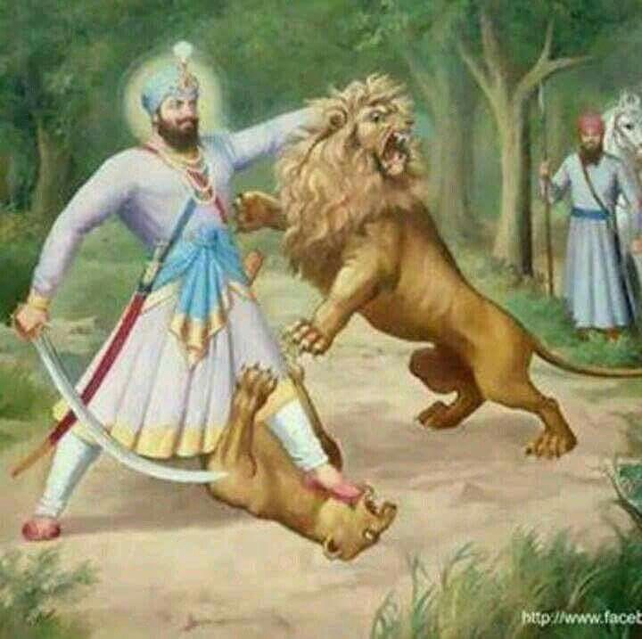

A Story of Courage and Spiritual Power

Guru Hargobind Ji, the sixth Guru of the Sikhs, was known for combining spiritual strength with warrior spirit. He wore two swords: one for **Miri** (worldly power) and one for **Piri** (spiritual power).
Once, a ferocious lion (sher) was terrorizing a village near where Guru Ji was staying. The villagers were afraid and helpless. Guru Hargobind Ji decided to face the lion himself.
With calmness and fearlessness, Guru Ji went into the forest where the lion was hiding. When the lion attacked, Guru Ji stood firm. With a single powerful stroke of his sword, he subdued the lion, protecting the people.
Guru Ji didn't kill the lion out of anger, but out of protection for the innocent. He taught that **true power lies in righteousness**, and a saint-soldier must protect the weak while staying connected to the divine.
“Be brave like a lion, but let your courage serve righteousness and truth.”
Back